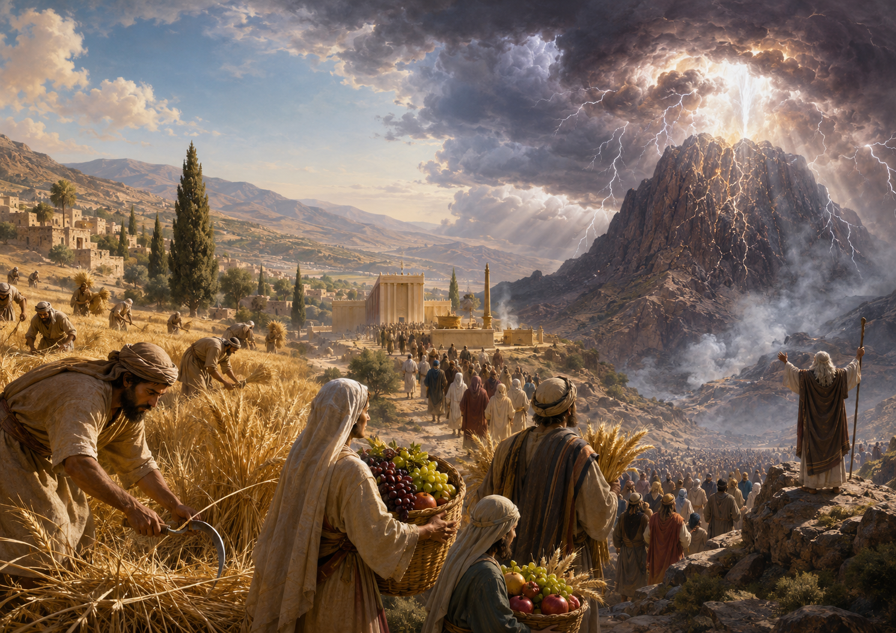

статья Шмот 19:1 и попытка связать Шавуот с Синаем
⬧ У нас есть текст:
| Шмот 19:1 | В третий месяц после выхода сынов Израиля из земли Египетской, в этот день они пришли в пустыню Синай. | בַּחֹדֶשׁ הַשְּׁלִישִׁי לְצֵאת בְּנֵי־יִשְׂרָאֵל מֵאֶרֶץ מִצְרָיִם בַּיּוֹם הַזֶּה בָּאוּ מִדְבַּר סִינָי׃ | שמות י״ט:א׳ |
Данный стих есть не органическая часть древнего рассказа о теофании на горе Синай (סִינַי), а является поздней хронологической рамкой, вставленной перед синайским повествованием: «в третий месяц… в этот день» — баходеш га-шлиши… байом газе (בַּחֹדֶשׁ הַשְּׁלִישִׁי… בַּיּוֹם הַזֶּה). Можно спорить, принадлежит ли эта формула позднему P, H или более общему редактору R, но принципиально важно другое: перед нами попытка упорядочить древнее предание через календарь. [1] [2] [3]
Сам рассказ о Синае говорит языком явления Бога: гора, облако, гром, дым, страх народа, восхождение Моше. А Шмот 19:1 добавляет к этому короткую календарную привязку: теперь Синайское событие помещается не просто «после Исхода», а именно в третий месяц, то есть в тот период, который связан с Шавуотом (שָׁבֻעוֹת). [4]
◊ Третий месяц как новая мифологическая схема
Помещение Синайского откровения в третий месяц не выглядит случайным. В аграрной логике года Песах связан с весной, выходом из Египта и началом зернового сезона — прежде всего с ячменной жатвой. Шавуот (שָׁבֻעוֹת) же стоит позднее: в периоде начала жатвы пшеницы, и первых плодов.
Поздний редактор как будто накладывает на эту земледельческую структуру новый историко-мифологический смысл: Песах становится не только весенним праздником начала ячменной жатвы, но и праздником Исхода; Шавуот потенциально становится не только праздником пшеничной жатвы, но и временем Синайского откровения. [5] [6]
Так аграрный календарь начинает переписываться в календарь священной истории: от ячменя к пшенице, от выхода из рабства к получению «десяти речений» — асерет га-дварим (עֲשֶׂרֶת הַדְּבָרִים). Иначе говоря, движение урожая превращается в движение откровения: полевая логика праздников получает новую богословскую ось — от Песаха к Синаю. [7] [8]
◊ Почему сказано «в этот день», но не названа точная дата?
Фраза «в этот день» — байом газе (בַּיּוֹם הַזֶּה) — особенно показательна. Она звучит торжественно, но при этом не называет конкретного числа в месяце. Это хорошо объясняется тем, что ранний Шавуот (שָׁבֻעוֹת) не был праздником с простой фиксированной датой вроде «шестого Сивана». [9] [10]
Он зависел от жатвенного времени: от начала серпа, от счёта недель, от омера (עֹמֶר), от пятидесятого дня, а в разных традициях этот счёт мог пониматься неодинаково. [11] [12] Поэтому редактор не пишет: «в шестой день третьего месяца», а оставляет более гибкую формулу: «в третий месяц… в этот день».
Он создаёт ощущение календарной значимости, но не фиксирует дату жёстко. Это позволяет связать Синай (סִינַי) с временем Шавуота, но ещё не превращает эту связь в точный догматический календарь.
◊ Третье число месяца, или подготовки?
Далее Редактор (R) говорит так:
| Шмот 19:16 | И вот наступило утро третьего дня: от громов и молний, густого облака на горе и громовых трубных звуков весь народ в стане содрогнулся. | וַיְהִי בַיּוֹם הַשְּׁלִישִׁי בִּהְיֹת הַבֹּקֶר וַיְהִי קֹלֹת וּבְרָקִים וְעָנָן כָּבֵד עַל־הָהָר וְקֹל שֹׁפָר חָזָק מְאֹד וַיֶּחֱרַד כׇּל־הָעָם אֲשֶׁר בַּמַּחֲנֶה׃ | שמות י״ט:ט״ז |
На первый взгляд можно подумать, что фраза «на третий день» — байом га-шлиши (בַיּוֹם הַשְּׁלִישִׁי) — указывает на третье число третьего месяца. Но сам текст Шмот 19 устроен иначе: «третий день» здесь, скорее относится не к числу месяца, а к третьему дню подготовки народа к теофании (Шмот 19:10-15). То есть это не календарная дата вроде «3 сивана», а лишь повествовательная отметка: после периода освящения, омовения и ожидания наступает день явления Яхве.
Формулами «в третий месяц», «в этот день» (Шмот 19:1) и «на третий день» — то есть на третий день подготовки (Шмот 19:16) — редактор не даёт прямой даты сошествия Яхве, а создаёт общую рамку для всего Синайского рассказа. По сути, перед нами не строгая календарная запись в духе жреческих текстов, а осторожная редакционная вставка: Синайское откровение помещается в период, связанный с аграрным Шавуотом (שָׁבֻעוֹת), но без прямого отождествления Синая с самим праздником.
◊ Почему редактор не сказал прямо: «Шавуот — это Синай»?
Здесь кроется самое важное. Даже поздний редактор не делает прямого отождествления Шавуот = дарование десяти речений. Он не говорит: «в праздник Шавуот Израиль получил скрижали Завета», не называет этот день «днём дарования Торы», не связывает его с омером (עֹמֶר), двумя хлебами, биккурим (בִּכּוּרִים) или микра кодеш (מִקְרָא־קֹדֶשׁ). [13] [14]
Вероятно, потому что такое прямое утверждение вступило бы в слишком сильное напряжение со всеми нормативными текстами Торы, где Шавуот описан как праздник жатвы, первых плодов, счёта недель и храмовых приношений. Чтобы прямо объявить Шавуот днём Синайского откровения, нужно было бы переформатировать весь корпус праздничных текстов. [15]
С другой стороны, народная память о Шавуоте как о празднике жатвы, пшеницы и первых плодов, вероятно, была ещё слишком яркой, чтобы её можно было просто переписать. Поэтому редактор действует осторожно: он помещает Синай в третий месяц и тем самым создаёт возможность для связи с Шавуотом, но не доводит эту связь до прямой формулы «Шавуот — день дарования 10 заповедей». [16] [17]
𐎀 Что мы имеем? 𐎀
Шмот 19:1 можно понимать как переходный редакционный мост. Поздний автор уже начинает строить новую мифологему: Песах — это Исход, Шавуот (שָׁבֻעוֹת) — потенциально Синай. Но эта идея ещё не доведена до конца.
Старый аграрный Шавуот — праздник жатвы пшеницы, первых плодов и земледельческого благословения — всё ещё слишком силён в текстах Торы и в народной практике. Поэтому редактор действует осторожно: он помещает Синайское откровение в третий месяц, но не решается прямо сказать, что Шавуот был днём дарования десяти речений.
Это уже не чисто аграрный календарь, но ещё и не окончательная раввинистическая формула зман матан торатейну — «время дарования нашей Торы». Перед нами промежуточный этап: аграрный праздник начинает получать синайское переосмысление, но его древняя жатвенная основа ещё не вытеснена.
⤷ Сноски